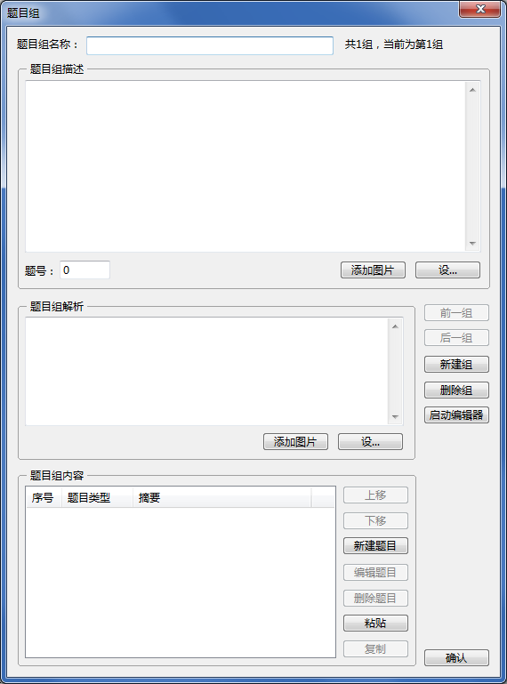
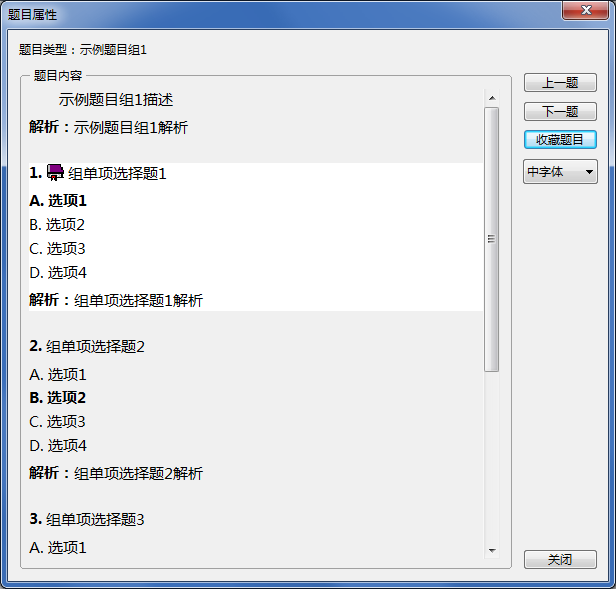

题目组
题目组
题目组是一组相关的题目，这些题目拥有一个共同的题干，例如“材料分析”“阅读理解”“完形填空”等。题目组的界面如下：

相当于“题目类型”，可为每个题目组设置一个独特的类型名称（但并不代表生成了一个新的题目类型），可不设置。
设置题目组中所有题目的共同题干，点击“设...”按钮可将
取得的文字粘贴入，允许换行，
可以为空。
可以在题目组描述中插入至多10张图片，详见
题目图片。
设置题目组中所有题目的共同解析，点击“设...”按钮可将
取得的文字粘贴入，允许换行，可以为空。
可以在题目组解析中插入至多10张图片，详见
题目图片。
 | 题目组中的题目也可分别设置解析。 |
|---|
给题目组中添加题目，最大支持添加200道题目，添加的题目均为默认类型，且不可添加题目组。内容中题目的显示顺序即为题目在题目组中的顺序，可通过“上移”“下移”按钮进行调整。
| 仅在选中单个题目时，“上移”“下移”才允许执行。 |
|---|
点击“新建题目”可向题目组中添加题目，添加方式与
新建题目完全相同；点击“编辑题目”或“删除题目”可对选中题目进行编辑和删除操作。
“粘贴”是将从本应用程序中剪切或复制的题目粘贴到当前题目组的题目列表中，若粘贴自定义类型题目，则会强制转换为对应的默认题目类型后再粘贴，无法粘贴题目组。
“复制”是将题目内容中选中的题目复制进剪贴板，题干为空的题目将被跳过。
可一次添加多个题目组，也可一次编辑多个题目组。
点击“确认”按钮，自动保存当前题目组的修改，退出新建，并将新建的全部有效题目组保存入当前题库中。
“有效题目组”的定义如下。
当在主界面右侧窗格双击一个题目组，或选中若干个题目组（未选中单个题目）后执行“查看属性”，将以如下方式显示属性，单击各子题目可以切换高亮，点击“收藏题目”可以收藏高亮的子题目。

在主界面收藏题目组时，将收藏题目组下全部题目。
GX Software 2020-2021
V2.0